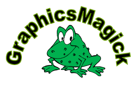

|
Last
Stable Release:
|
1.0.6
(Released April 4, 2004)
|
|
Current
Stable Release:
|
1.1
(Released April 4, 2004)
|
GraphicsMagick is a robust collection of tools and
libraries which support reading, writing, and manipulating an image
in over 88 major formats including popular formats like TIFF, JPEG,
JPEG-2000, PNG, PDF, PhotoCD, SVG, and GIF. GraphicsMagick
supports creating new images on the fly, making it
suitable for building dynamic Web applications. GraphicsMagick
may be used to resize, rotate, sharpen, color reduce, or add special
effects to an image and save the result in the same or differing
image format. Image processing operations are available from the
command line, as well as through C, C++, Perl, Java, or Windows COM
programming interfaces. Extensions are available from third-parties
to support programming in Borland's
Delphi, Java, PHP, Python, Scheme, and Ruby.
GraphicsMagick
is copyrighted by the GraphicsMagick
Group as well as many others. GraphicsMagick is dististributed
under a MIT-style License, which is approved by the Open
Source Initiative and is compatible with the GPL.
GraphicsMagick is originally derived from ImageMagick
5.5.2. Since the branch from ImageMagick, many improvements have been
made (see news) by many
authors using an open development model. GraphicsMagick is
available for free, may be used to support both open and proprietary
applications, and may be redistributed without fee.
Here are just a few examples
of what GraphicsMagick can do:
-
|

|
Convert an image from one format to another (e.g.
TIFF to JPEG)
|

|
|
|
Resize, rotate, sharpen, color reduce, or add
special effects to an image
|
|
|
Create a montage of image thumbnails
|
|
|
Create a transparent image suitable for use on
the Web
|
|
|
Turn a group of images into a GIF animation
sequence
|
|
|
Create a composite image by combining several
separate images
|
|
|
Draw shapes or text on an image
|
|
|
Decorate an image with a border or frame
|
|
|
Describe the format and characteristics of an
image
|
GraphicsMagick is quite portable, and compiles under almost
every general purpose operating system that runs on 32-bit or 64-bit
CPUs. GraphicsMagick is available for virtually any Unix or
Unix-like system, including Linux. It also runs under Windows
'98 and later ('98, ME, NT 4.0, 2000, and XP), and MacOS-X. Ports
exists for MacOS 9 and VMS but the ports lack a maintainer and have
not been tested for quite a while (please volunteer!).
|
 GraphicsMagick
Sponsors GraphicsMagick
Sponsors
|
We thank these sponsors of the GraphicsMagick
project:
-
|

|
Discover the perfect image. Stock photography and
pictures.
|
|
|
PDF Sages, a company dedicated to providing
unmatched PDF consulting, training, and development services.
|
Copyright ©
GraphicsMagick Group 2002, 2003, 2004
{kind=link}